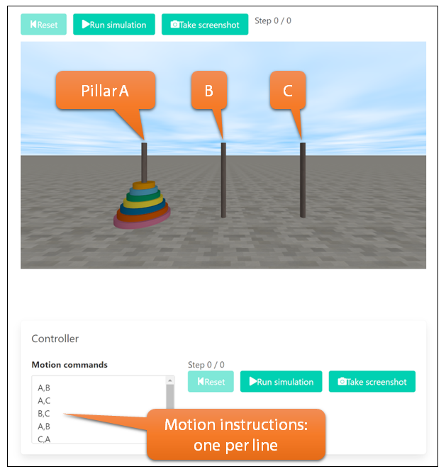

The Tower of Hanoi consists of three pillars and multiple discs. The pillars are named A, B, and C, from left to right. Initially, all the discs are placed on pillar A.
The instructions for moving the discs are simple. Write one line of instruction to move a disc once. To move the top disc from pillar A to the top of pillar B, write "A,B." For moving the top disc from pillar B to the top of pillar C, write "B,C." By entering these instructions in the "Motion commands" text area, you can specify the movements of the discs.
After completing the instruction entry, click the "Run commands" button to initiate the animation (this button will then change to the "Pause" button). Alternatively, you can start the animation by clicking on the Tower of Hanoi screen. To pause the animation, either click the "Pause" button or click on the animation screen once more.
When the animation is paused, you can save a screenshot of the animation screen by pressing the "Take screenshot" button.
This simulator was developed for teachers who teach programming.
Suppose you are a teacher instructing programming and want to teach your students about the concept of recursive calls. You might want them to solve the famous puzzle 'Tower of Hanoi', which utilizes the idea of recursion. However, while you can teach the concept of the Tower of Hanoi, it might be challenging to make the class appealing to students who are just beginning to learn programming, as replicating the movement of discs in the Tower of Hanoi on a screen requires extensive knowledge beyond just recursion.
This 'Hanoi Simulator' is a program that moves the discs of the 'Tower of Hanoi' according to given instructions. The simulator itself does not have the functionality to solve the Tower of Hanoi puzzle. (However, it does come with initial instructions to move three discs.) You will have your students write a program that outputs instructions for moving the discs in the Tower of Hanoi. Then, by executing these outputs in this simulator, you can visually confirm through animation whether the 'Tower of Hanoi' has been solved correctly.
In the class, participants will output a set of instructions to move the discs of the Tower of Hanoi using their own programs. They will then copy and paste these instructions into the Hanoi Simulator to solve the Tower of Hanoi puzzle. By submitting a screenshot of their results, instructors can determine whether the students were able to solve the Tower of Hanoi puzzle.
If you want students to attempt puzzles with more or fewer discs, you can set the number of discs by specifying it in the "numDiscs" URL parameter.
Source: Hanoi Simulator on GitHub
Textures for the floor, discs and pillars by Lennart Demes at ambientCG